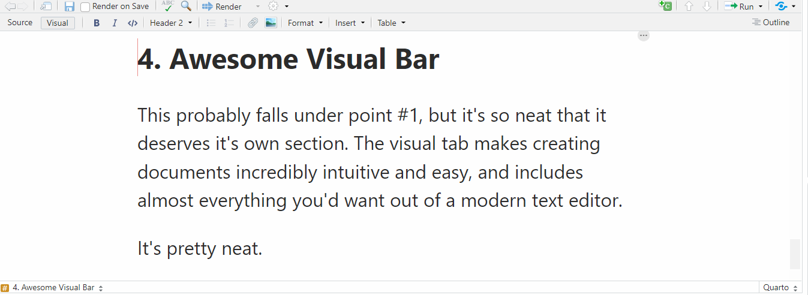

To all my eight viewers who happened to stumble upon the initial release of my blog - you might of noticed it looks drastically different now. When I first built this site, I was using blogdown along with Hugo Apero, but I’m making the switch over to Quarto from now on.

Here are some reasons why you should consider migrating as well.
1. Quarto is easy.
blogdown is essentially the same as Hugo, but with the ability to compile RMarkdown files. Some themes are very easy to work with, while others can be a bit of a pain. Quarto is extremely simple and comes with all the tools anyone would need for blogging.
Hugo Apero, the theme I used previously, is actually designed really well in this respect, so this may or may not be a problem for you - it’s very theme dependent.
2. Not just for blogging.
Quarto is capable of creating much more than blogs; presentations, PDF reports, interactive documents, and easy documentation pages are all supported. You can view some examples in their gallery.
There’s obviously a good amount of carryover between these formats and this blog, so it’s good practice for the real world down the line.
3. It supports multiple languages
Technically, blogdown does as well; you can use the reticulate package and hard-code HTML into RMarkdown to create D3 objects, for example. And by that nature, you can always just stick with RMarkdown. However, Quarto uses a custom .qmd format, which is specifically designed for cross-language support. That’s more or less the selling point of using Quarto.
4. Awesome Visual Bar
This probably falls under point #1, but it’s so neat that it deserves it’s own section. The visual tab makes creating documents incredibly intuitive and easy, and includes almost everything you’d want out of a modern text editor.
It’s pretty neat.

5. It’s compatible with Hugo.
My old posts were written in RMarkdown, but Quarto only supports qmd. Hugo understands this format perfectly fine, though, so if I were to ever go back to blogdown, it would be incredibly easy to migrate.
6. Superior to Distill?
I don’t think the advantages of Quarto are so significant that it mandates switching over to Distill. With that said, while both offer blogs that are extremely similar in style, Quarto has more features and support. If you are creating your first blog, there isn’t much of a reason (IMO) to choose Distill over Quarto.
Posts to Read About Quarto
Here is a github that has a ton of links related to making awesome things in Quarto. Here are some posts I’d recommend reading:
- Alison Hill: We don’t talk about Quarto..
- Danielle Navarro: Posting a Distill blog to Quarto.
- Yihui Xie: With Quarto Coming, is RMarkdown Going Away? No.
On that last point, I’ll briefly discuss the…
Disadvantages of Quarto
Really, the main one is lack of customization. Hugo is far more complex, and can create some sophisticated websites to suit any need. Quarto, not so much. This does make blogging on this platform feel slightly generic in comparison, unfortunately. Optimized Hugo sites might also be faster, though admittedly, I have no idea if this is likely / true or not.
With that said, the pros outweigh the cons in my case, which is why I decided to make the jump. I hope you enjoy the new look.